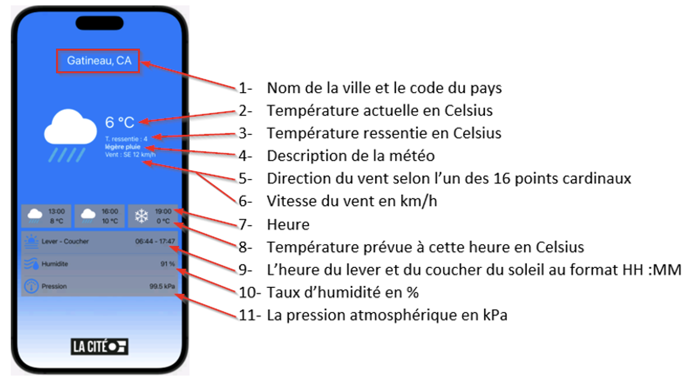

À partir de l’application météo que vous pouvez télécharger ci-dessous, intégrez une API afin d’obtenir la météo actuelle. Une clé API vous sera fournie. Cependant, je vous recommande de créer un compte avec votre courriel du collège et d’utiliser votre propre clé API.
Documentation de l’API : https://openweathermap.org/forecast5#name5
Les informations suivantes devront provenir de l’API :
"weather": [
{
"id": 800,
"main": "Clear",
"description": "clear sky",
"icon": "01d"
}
],
Vous pouvez utiliser ces informations pour intégrer les SF Symbole fournis par Apple.
switch weatherIcon {
case "01d":
return "sun.max.fill"
case "01n":
return "moon.fill"
...
default:
return "--"
}
func windDirection(degrees: Double) -> String {
let cardinal = ["N", "NNE", "NE","ENE", "E", "ESE", "SE", "SSE", "S", "SSO", "SO", "OSO", "O", "ONO", "NO", "NNO"]
let index = Int((degrees / 22.5).rounded()) % cardinal.count
return cardinal[index]
}
func hPaTokPa(_ hPa: Double) -> Double {
return hPa / 10.0
}
⚠️ Remarque : Faites attention aux unités. Par exemple, la température donnée par l’API est en kelvin par défaut.